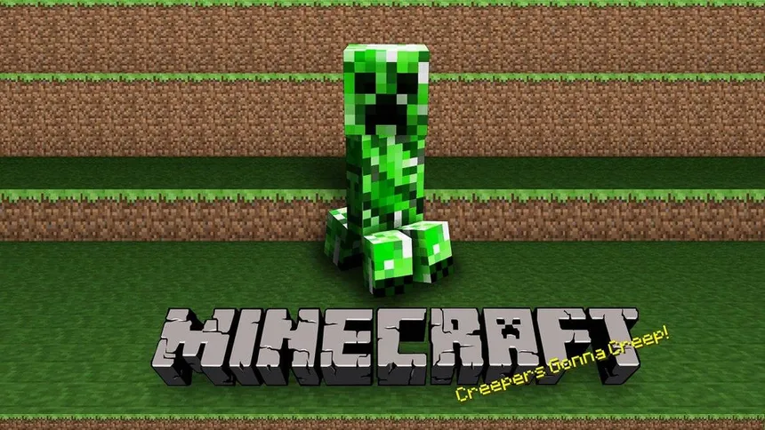

"Os jogadores de Minecraft podem esperar novidades emocionantes na mais recente atualização do jogo, que promete expandir ainda mais as possibilidades de construção e exploração."
Na última atualização do tão amado jogo de construção e exploração, Minecraft, os jogadores podem se preparar para mergulhar em um mundo repleto de novos recursos e desafios. A versão 1.18, carinhosamente apelidada de "Expansão Criativa", foi lançada recentemente e trouxe consigo uma série de adições empolgantes.
Uma das principais atrações dessa atualização é a introdução de biomas inexplorados que ampliarão a diversidade dos ambientes disponíveis para os jogadores. Agora, você poderá se aventurar em cavernas exuberantes e florestas densas, desvendar os segredos de vales profundos e enfrentar os perigos de montanhas imponentes. Cada bioma apresenta uma variedade única de recursos e desafios, incentivando os jogadores a explorarem e se adaptarem a novos territórios.
Além disso, os jogadores agora podem se tornar verdadeiros mestres da engenharia com a adição de máquinas e dispositivos avançados. De sistemas automatizados de fazenda a mecanismos complexos de transporte, a atualização "Expansão Criativa" permite que os jogadores elevem suas habilidades de construção a um novo patamar, tornando suas criações mais impressionantes e eficientes do que nunca.

E para aqueles que buscam uma dose extra de desafio, novos monstros e chefes foram introduzidos em algumas das áreas mais perigosas do jogo. Aventure-se com cautela, pois essas criaturas formidáveis testarão suas habilidades de combate e estratégia como nunca antes.
Com a comunidade de Minecraft já em polvorosa, a atualização 1.18 promete reacender o entusiasmo dos jogadores e proporcionar inúmeras horas de diversão e criatividade. Se você é um fã de longa data ou está apenas começando sua jornada em blocos, essa atualização certamente oferecerá algo novo e emocionante para todos os tipos de jogadores. Portanto, prepare-se para explorar, construir e enfrentar os desafios do mundo pixelizado de Minecraft!